Recent advances in language model interpretability using sparse autoencoders (SAEs) have yet to effectively translate to the visual domain, mainly due to the difficulty and ambiguity of labeling visual concepts. In this paper, we introduce Visual Interpretability via SAE Transfer Alignment (VISTA), a framework that transfers interpretability from language to vision in a LLaVA-style vision-language model by constraining a visual projector to map visual tokens into an LLM's pre-existing, labeled textual SAE space. This approach enables visual interpretability without training dedicated vision SAEs. By regularizing the projector using the LLM's SAE reconstruction loss, VISTA achieves a threefold increase in the matching rate, which measures how accurately the most activating textual concepts in the SAE space correspond to semantic elements in the image. Using this framework, we further analyze spatial localization properties of different vision encoders and show that DINOv2 features have stronger localization abilities than other encoders. Leveraging this precision, we validate VISTA's cross-modal alignment through fine-grained, localized concept interventions, where specific objects are removed or replaced in the model's perception while preserving the surrounding scene. This results in improvements of 35% in object removal and 47% in object replacement tasks over vision-only baselines, providing causal evidence that visual tokens inhabit the text SAE manifold. These contributions are validated across multiple LLM architectures.
Large Vision-Language Models have powerful visual reasoning capabilities, but their internal representations are difficult to interpret due to polysemanticity — individual neurons respond to many unrelated concepts simultaneously.
Monosemantic features from vision-only SAEs are difficult to label automatically. They also do not reveal how visual features are actually interpreted once they enter the LLM's residual stream.
Fine-tuning existing textual SAEs is extremely expensive: Gemma Scope required ~20% of GPT-3's total compute and 20 PB of storage — plus significant re-labelling effort.
Both the vision encoder and the LLM are kept frozen to leverage existing semantic knowledge.
A multimodal projector is trained with Cross-Entropy loss + SAE Reconstruction Loss.
Forces visual tokens directly into the LLM's pre-existing, labelled text-based SAE feature space.
Only the alignment projector is trained — no new SAEs, no re-labelling.
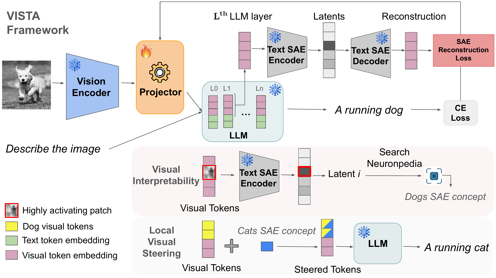
VISTA Framework. Training: A trainable projector maps tokens from a frozen vision encoder to a frozen LLM, optimized via Cross-Entropy and an auxiliary SAE Reconstruction Loss to force alignment of the visual embeddings with the manifold defined by pre-trained Text SAEs. Visual Interpretability: Once aligned, highly activating visual tokens can be interpreted via the Text SAE. Activating latents are searched in Neuronpedia for their linguistic labels that correspond to the visual concept in the patch, such as "Dog" concept in the patch showing the dog. Steering: By manipulating specific SAE concepts in localized visual tokens, model's output can be precisely steered (changing "A running dog" to "A running cat") preserving global context.
Visual tokens only align with text features in deeper layers. In certain LLMs, this alignment does not happen naturally at all.
Alignment is induced immediately from layer 0, across all architectures — making VISTA essential for models that fail to align naturally.
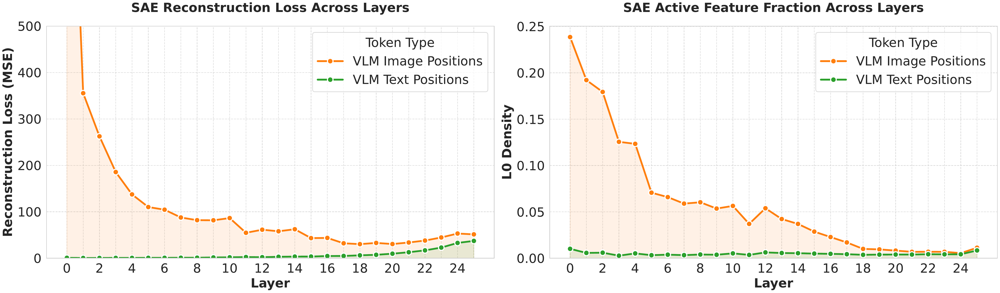
Reconstruction & sparsity across layers without SAE constraints (DINOv2). Alignment only emerges in later layers.
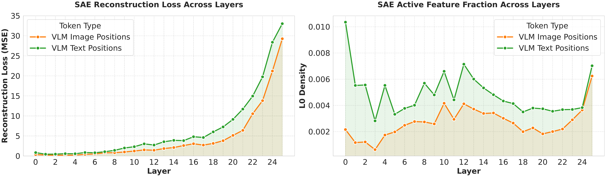
Reconstruction & sparsity across layers with SAE constraints (DINOv2). Alignment is immediate from layer 0.
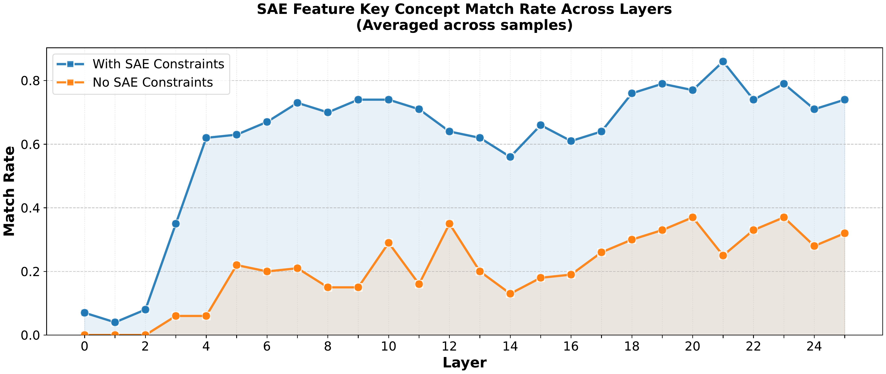
LLM-Verified Matching Rate across layers for DINOv2 backbone. SAE constraints improve matching rate by more than threefold on average across layers and across different visual encoders and LLM backbones.
Measures how accurately the most activating text SAE concepts activating on the visual tokens correspond to semantic elements visible in the image, as verified by an oracle LLM.
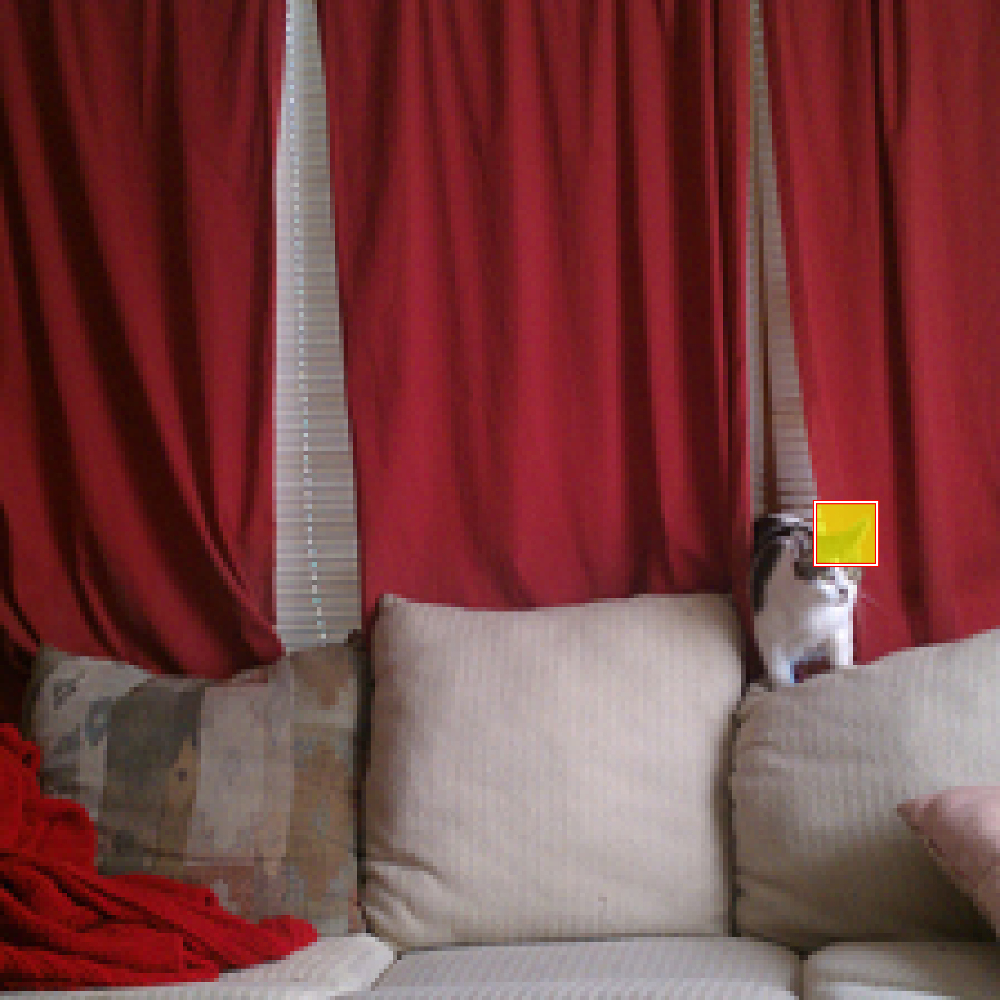
(a) Cat (DINOv2)
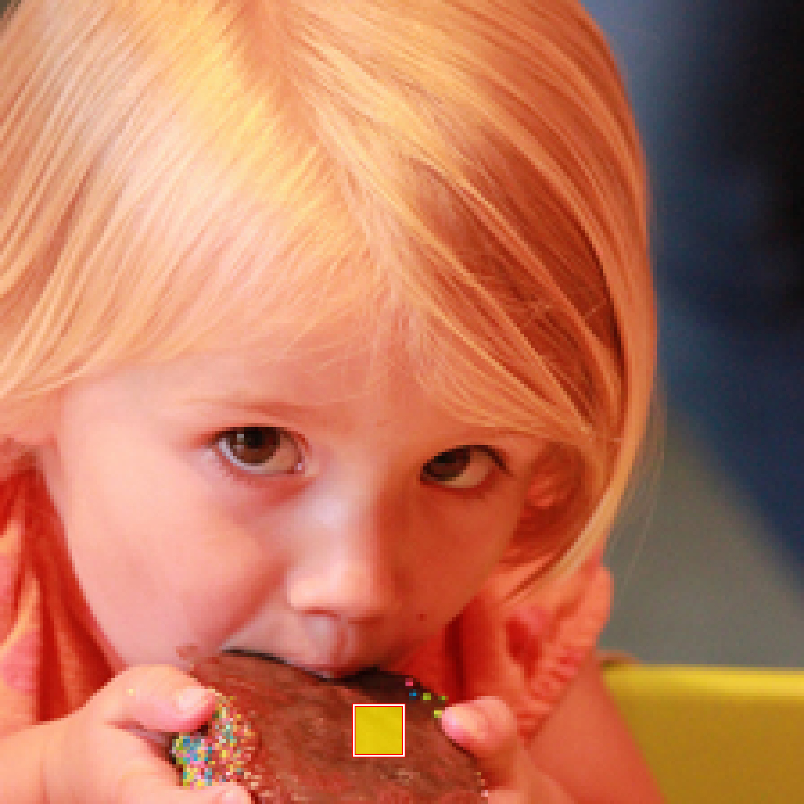
(b) Cake (DINOv2)
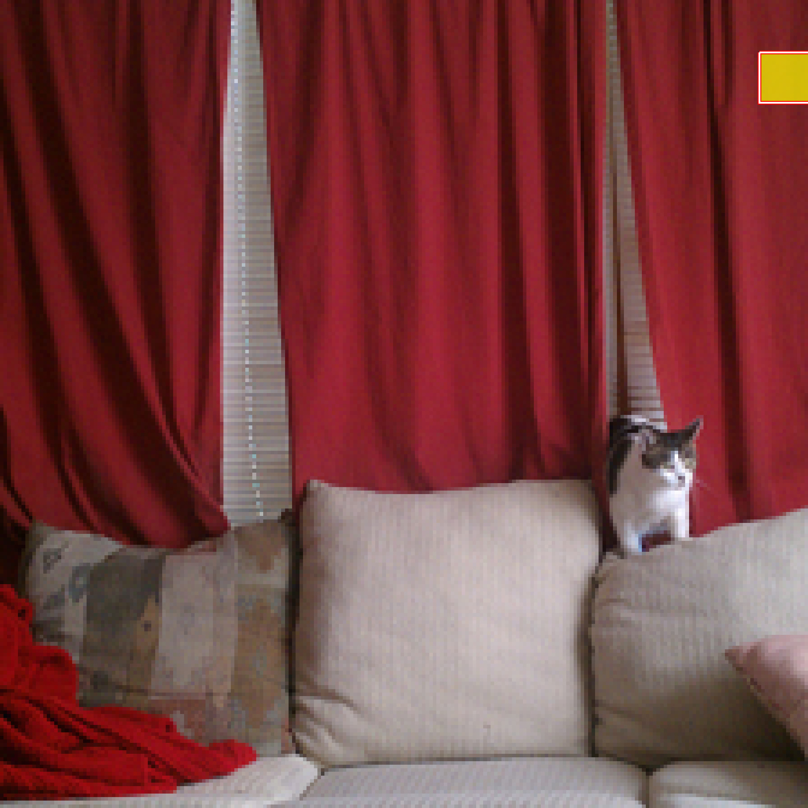
(c) Cat (CLIP)
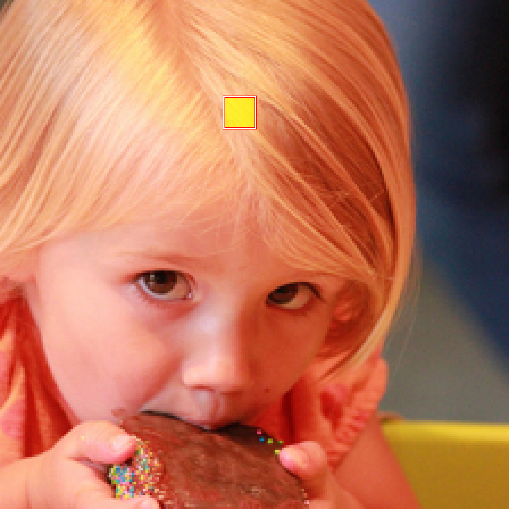
(d) Cake (CLIP)
Highlighted patches show which tokens activate the target concept feature. DINOv2 (top row) correctly localises the object; CLIP (bottom row) produces imprecise localization.
Precise local interpretability depends heavily on the choice of the vision encoder and its spatial fidelity.
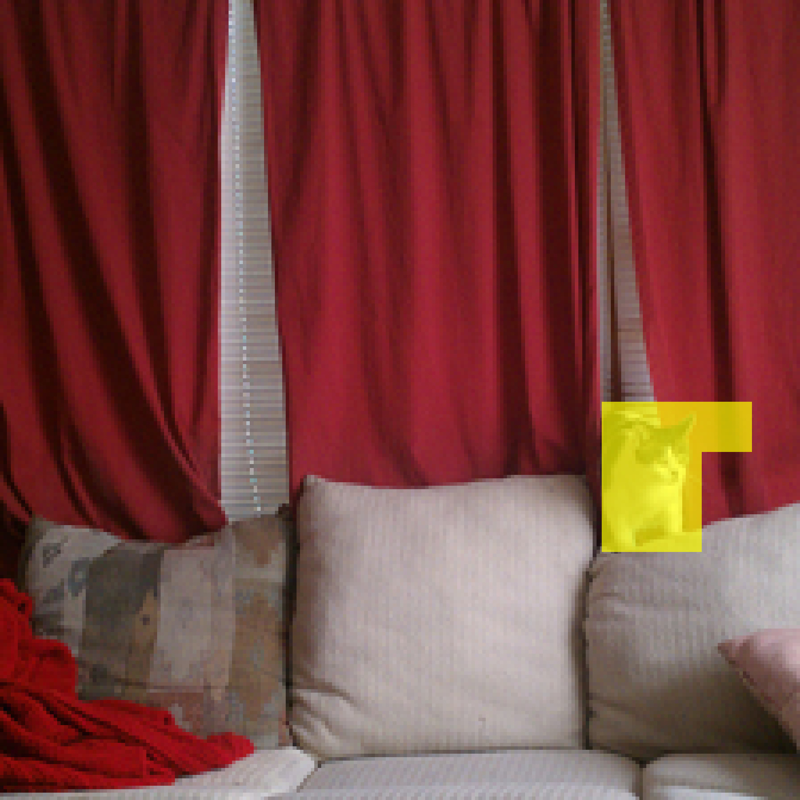
Q: What is shown in this image?
Original: The image shows a cat sitting on a couch with a pillow. The cat is looking at the camera.
Remove "cat": The image shows a couch with a person sitting on it. The person is wearing a white shirt and has a red scarf around their neck.
Replace with "dog": The image shows a dog sitting on a couch with a pillow. The dog is a white and tan mix.
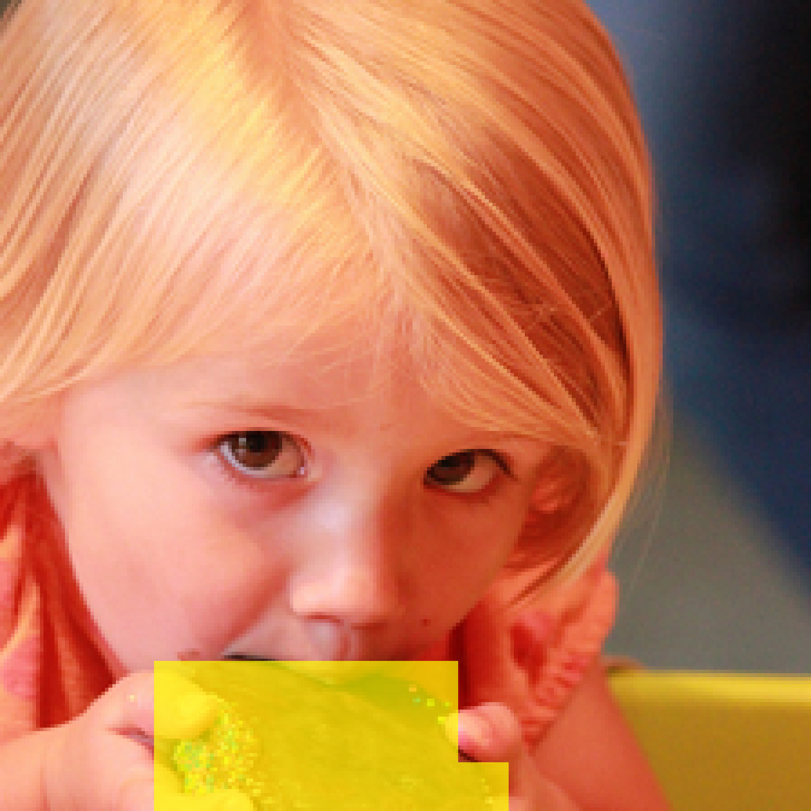
Q: What is shown in this image?
Original: The image shows a girl eating a chocolate chip cookie. The girl is holding a cookie in her hand and is eating it.
Remove "chocolate": This image shows a girl with a large amount of food on her face. The girl is eating a sandwich.
Replace with "bread": This image shows a girl with shirt. She is holding a piece of bread in her hand.
We steer Danger, Sleeping, and Sadness. In all cases, the steering vector inverts the model's interpretation (Steered) vs the original (Baseline).
Such concepts are binary in language but lack a fixed visual signature; for instance, "danger" can manifest through aggression, instability, or environmental hazards. This demonstrates another advantage of steering with text-aligned SAEs over visual ones.
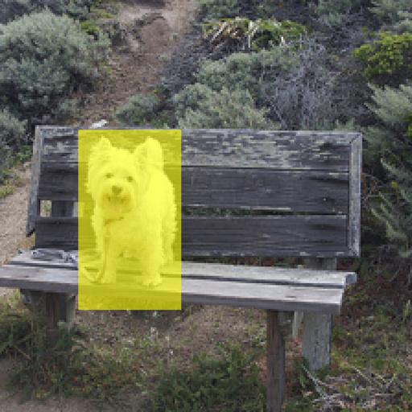
Steering: Danger.
Q: Is the dog safe to approach?
Baseline: "Yes, the dog is safe to approach."
Steered: "No, the dog shown is not safe to approach."
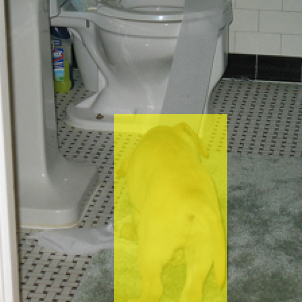
Steering: Sleeping.
Q: Is the dog awake or sleeping?
Baseline: "The dog is awake and standing on the bathroom floor."
Steered: "The dog is sleeping on the bathroom floor."
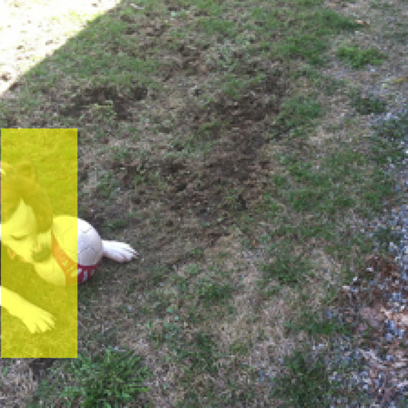
Steering: Sadness.
Q: Is the dog happy?
Baseline: "The dog is happy because it is playing with a soccer ball."
Steered: "No, the dog is not happy."
| Method | Vision Encoder | Remove | Replace | |||||||
|---|---|---|---|---|---|---|---|---|---|---|
| S2 | S1 | S0 | MS | S2 | S1 | S0 | MS | |||
| VisionSAE | CLIP Global | 11 | 84 | 5 | 1.06 | 8 | 49 | 43 | 0.65 | |
| CLIP Local | 24 | 23 | 53 | 0.71 | 23 | 14 | 63 | 0.60 | ||
| PatchSAE | CLIP Local | 5 | 55 | 40 | 0.65 | 34 | 31 | 35 | 0.99 | |
| Ablation (No SAE) |
DINOv2 | 10 | 2 | 88 | 0.22 | 3 | 0 | 97 | 0.06 | |
| CLIP | 13 | 20 | 67 | 0.46 | 16 | 6 | 78 | 0.38 | ||
| I-JEPA | 8 | 18 | 74 | 0.34 | 20 | 9 | 71 | 0.49 | ||
| VISTA | DINOv2 | 47 | 49 | 4 | 1.43 | 59 | 28 | 13 | 1.46 | |
| CLIP | 18 | 4 | 78 | 0.40 | 7 | 4 | 89 | 0.18 | ||
| I-JEPA | 8 | 25 | 67 | 0.41 | 17 | 47 | 36 | 0.81 | ||
Table 2. Quantitative analysis of steering using Gemma-2-2B LLM backbone. S2: scene preserved | S1: edit with hallucinated extras | S0: failed steering | MS = (2·NS2 + NS1) / Ntotal ∈ [0, 2]. VISTA + DINOv2 achieves the best MS in both Remove and Replace tasks.

Feature clustering visualisation on "birds" SAE concept.
The aligned SAE feature space can be utilized to cluster images based on shared semantic attributes. To perform clustering, we first select the top activating tokens from the image, then find the images that activate on the same concept.
This yields coherent semantic clusters, confirming that visual tokens inherit the language model's structured organization.
@InProceedings{kravets2026vista,
author = {Kravets, Alexey and Li, Da and Li, Chuan and Chen, Da and Namboodiri, Vinay P.},
title = {{Interpretability Transfer from Language to Vision via Sparse Autoencoders}},
booktitle = {Proceedings of the International Conference on Machine Learning (ICML)},
year = {2026}
}